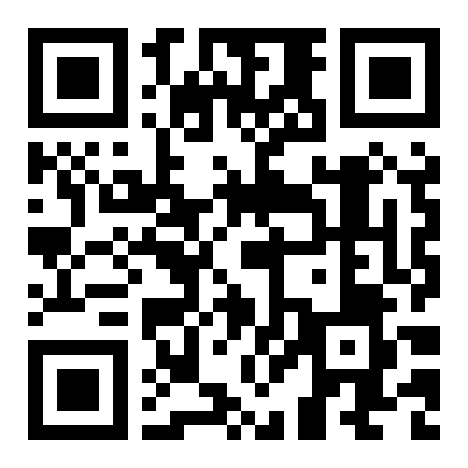

🌌
은하와 우주 실험실
중학교 3학년 과학 · Ⅶ-2 은하와 우주
오늘 쓸 도구를 눌러 들어가세요.
🌌
우리은하 탐험기
1차시
위와 옆에서 본 우리은하, 은하수의 정체, 태양계 찾기 게임
🔭
스텔라리움 웹
↗ 새 탭
1·2차시
실제 밤하늘을 보는 관측 프로그램이에요. 수업 시간은 낮이라서 시각을 밤으로 바꾸거나 대기 아이콘을 꺼야 별이 보여요.
✨
천체 감별 함께 퀴즈
3차시
성단, 성운, 외부 은하 구별하기. ‘혼자 풀기’로 내 속도에 맞춰 연습해요.
🎈
우주 팽창 시뮬레이터
4·5차시
가상 풍선 실험, 은하 사이 거리 재기, 기준 은하 바꾸기
🔒 이 사이트는 이름이나 답 같은 학생 정보를 모으지 않아요. 결과는 내 화면에서만 보여요.
📶 인터넷이 잘 안 되면 선생님 화면을 함께 봐요.

태블릿 카메라로 QR을 찍어 들어오세요.
닫기